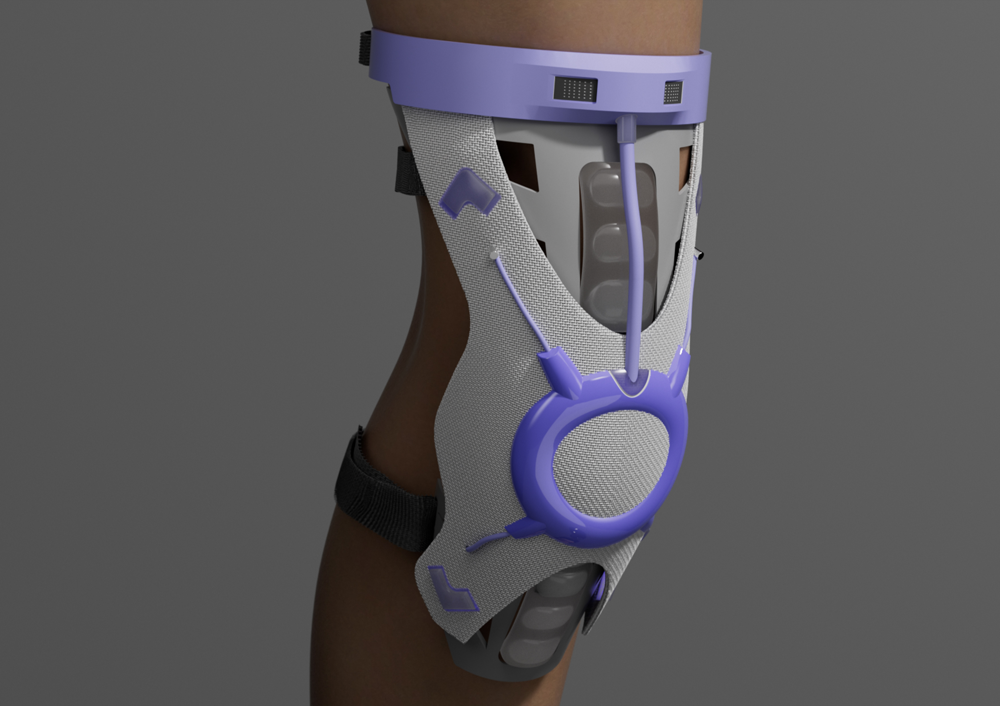

可穿戴运动传感原型 · WEARABLE SPORTS-SENSING PROTOTYPE
KneeUp 膝望
支撑可感，反馈可用。
Support you feel. Feedback you can act on.
你的随身训练伙伴——打开网页，摄像头即时读出下蹲深度、左右对称与动作质量。
Your always-available training companion — instant squat depth, side-to-side symmetry and movement-quality scores, right in the browser.
演示数据 · SIMULATED Simulated unless ● LIVE is on

问题共识 · WHY NOW
膝盖默默承受着一切。
Knees carry the load — silently.
没有反馈，动作走形、负荷累积，都在无声发生。
Without feedback, form slips and stress quietly adds up, training after training.
≈61/100k·year
每年每 10 万人中的半月板相关损伤例数（文献估算）
Meniscus-related injury cases per 100,000 people each year (estimate).
来源：PMC9205760 · literature estimate · est.
12–14%est.
文献估算：无症状人群膝部 MRI 中可见半月板信号的比例
Share of asymptomatic knees with meniscus findings on MRI, per literature estimates.
来源：literature estimate（文献估算，区间值）
Figures are literature-based context estimates · 以上为文献背景估算，非我方实测数据。
产品 · PRODUCT
支撑、通风、智能，一条护具。
Support, airflow, intelligence — in one sleeve.

支撑 · Support
贴合支撑结构，运动中稳住膝盖轨迹，支撑感可感、可调。
通风 · Airflow
导流气道贯穿护具，长训练不下闷，戴得住才谈得上反馈。
智能 · Intelligence
传感与反馈路线：摄像头即刻可用，织物传感在路上。
现场演示 · LIVE DEMO
这组动作，做到位了吗？
Was that rep a clean one?
三条通道即时回答——视觉提示、游戏反馈、实机曲线；全部为动作质量提示，仅供参考。
Three channels answer in real time — visual cues, game feedback and a live hardware trace. Informational form cues only.
- 看得见 · SEEING
- 测得出 · MEASURING
- 可解释 · EXPLAINABLE
摄像头画面将在此叠加骨骼、膝角与提示。
Camera preview with skeleton overlay appears here.
ON-DEVICE 摄像头画面只在你的浏览器内计算，不上传、不存人脸。
Frames are processed inside your browser — nothing uploaded, no face stored.
提示流将在此滚动：膝盖方向、下蹲深度、左右对称。
Cues appear here during the demo.
深蹲充能、连击上升——做对了一眼可见。开始演示后此区点亮。
Charge faster and the combo climbs — good reps show, instantly.
技术 · TECH
三层架构，今天能跑两层。
Three layers — two run today.
L1 · 视觉 AI VISION AI
浏览器里的姿态估计
MediaPipe Pose 骨骼叠加，膝角、对称度、质量分实时计算，全程 on-device。
RUNS TODAY · 今天可跑L2 · 规则引擎 RULE ENGINE
计数、区间与提示流
滞回计数、目标区间判定、提示流生成；桌面 Chrome 可经 Web Serial 直连护具原型读取 sEMG 曲线（● LIVE / ○ SIMULATED 双灯标注，断流自动降级）。
RUNS TODAY · 今天可跑L3 · 织物传感 TEXTILE SENSING
数据直接从护具来
织物传感上腿，信号从贴身层直出——不依赖摄像头的那一天。
ROADMAP · 路线图The demo above runs L1 + L2, today. 上方演示，今天就在跑 L1+L2。
硬件已通电、已跑串口链路——不是概念图。All shots are of powered, working units.
商业 · BUSINESS
两条市场路径。
Two ways this ships.
C 端 · FOR ATHLETES
训练者版
你的随身训练伙伴——打开网页，摄像头即时读出下蹲深度、左右对称与动作质量。零安装、零硬件门槛。
Your always-available training companion — instant depth, symmetry and quality scores in the browser.
打开训练演示 · Open the demoB 端 · FOR FACILITIES
场馆版
教练端实时屏：整组学员的动作质量，一块屏幕尽收；训练设置由教练端下发。
A live coach console — the whole squad's movement quality on one screen.
看场馆方案 · See the facility edition传感器护具路线验证了真实需求；KneeUp 补的是另一层——纯网页、零安装的 3D 即时动作反馈与游戏化训练。不同的层，不是低配版。
合规 · COMPLIANCE
合规不是页脚小字，是我们交付的第一块部件。
Compliance is our first shipped component.
KneeUp 不做医疗宣称：反馈归训练，诊断归医生——合规不是页脚小字，是我们交付的第一块部件。
KneeUp is a training tool, not a medical device — form feedback, not diagnosis. We say it up front, on purpose.
非医疗器械 · NOT A MEDICAL DEVICE
运动支撑与训练反馈原型——不做诊断、不做治疗、不做效果承诺。
A sports-support, training-feedback prototype: no diagnosis, no treatment, no outcome promises.
数据本地处理 · ON-DEVICE BY DEFAULT
摄像头画面只在浏览器内计算，不上传、不存人脸。
Camera frames are computed inside your browser — nothing uploaded, no face stored.
模拟标注策略 · LABELLED SIMULATED
凡非实机数据一律挂「模拟 SIMULATED」角标，可被任何人当场验证。
Anything not from live hardware carries a SIMULATED chip — verifiable on the spot.
路线图：产品化后按预期用途判定分级并规划认证路径（计划中，非现有宣称）。/ A planned classification and certification path — planned, not claimed.
团队 · TEAM FREE WILL